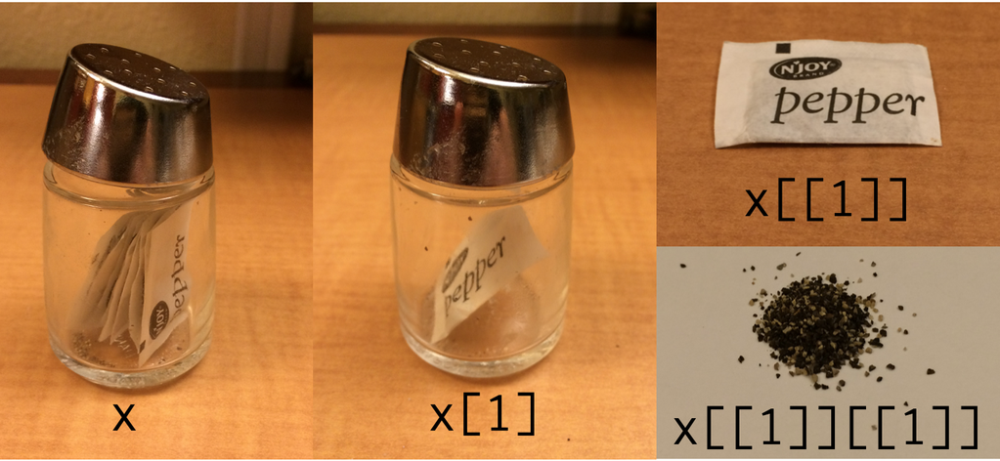

Introduction
These notes heavily rely on the work of Hadley Wickham.
Very simplified way of how to think about programming: variables and functions.
f(x): x -> y f is a function which accepts an argument x, performs some
action on it, and returns the result y. We combine variables and functions to
achieve the desired result.
Variables usually contain some data. Functions usually perform some action on data.
Variables and functions are called objects. You can call an object by its
name. You can create a new object by assigning it to a name. In R, the
assignment operator is <-.
# Call an object
pi
## [1] 3.141593
# Create a new object
my_pi <- 3.1
my_pi
## [1] 3.1
# Call a function to an object
rep(my_pi, 3)
## [1] 3.1 3.1 3.1
# Get help for a function
help(rep)
?rep
Data structures
In R, there are 3 main data types:
- Atomic vector: 1-dimensional, homogeneous
- List: 1-dimensional, heterogeneous
- Data frame: 2-dimensional, heterogeneous
You can use function str() to understand the structure of an object.
Atomic vector
Basic data type of R. R understands individual values (scalars) as pi and
my_pi as vectors of length 1. There are 4 common types of vectors: logical,
integer, double (numeric), character (string). You can combine more values into
a vector by using function c().
my_vector <- c(pi, my_pi)
my_vector
## [1] 3.141593 3.100000
length(pi)
## [1] 1
length(my_vector)
## [1] 2
Atomic vectors are homogeneous. If you add an a value of other type, all
values are coerced to the most flexible type.
str(my_vector)
## num [1:2] 3.14 3.1
my_vector <- c(my_vector, "a")
my_vector
## [1] "3.14159265358979" "3.1" "a"
str(my_vector) # all values are coerced to character
## chr [1:3] "3.14159265358979" "3.1" "a"
my_logical_vector <- c(TRUE, FALSE)
my_logical_vector
## [1] TRUE FALSE
c(my_logical_vector, 4) # all values are coerced to integer
## [1] 1 0 4
List
Lists differ from atomic vectors because their elements can be of any type,
including lists. We can construct a list by using list().
my_list <- list(my_vector, my_logical_vector, c(TRUE, FALSE))
str(my_list)
## List of 3
## $ : chr [1:3] "3.14159265358979" "3.1" "a"
## $ : logi [1:2] TRUE FALSE
## $ : logi [1:2] TRUE FALSE
Lists can contain other lists as well.
my_second_list <- list(my_list, c(3, 4))
str(my_second_list)
## List of 2
## $ :List of 3
## ..$ : chr [1:3] "3.14159265358979" "3.1" "a"
## ..$ : logi [1:2] TRUE FALSE
## ..$ : logi [1:2] TRUE FALSE
## $ : num [1:2] 3 4
c() combine several lists into one.
my_second_list_2 <- c(my_list, c(3, 4))
str(my_second_list_2)
## List of 5
## $ : chr [1:3] "3.14159265358979" "3.1" "a"
## $ : logi [1:2] TRUE FALSE
## $ : logi [1:2] TRUE FALSE
## $ : num 3
## $ : num 4
Lists (and vectors as well) could be named.
names(my_second_list) <- c("my_list", "random_integers")
str(my_second_list)
## List of 2
## $ my_list :List of 3
## ..$ : chr [1:3] "3.14159265358979" "3.1" "a"
## ..$ : logi [1:2] TRUE FALSE
## ..$ : logi [1:2] TRUE FALSE
## $ random_integers: num [1:2] 3 4
You can define them with names right away.
my_third_list <- list(letters = c("a", "b", "c"), integers = c(1, 2))
str(my_third_list)
## List of 2
## $ letters : chr [1:3] "a" "b" "c"
## $ integers: num [1:2] 1 2
Data frame
This is a special type of list: list of equal-length vectors. We usually store
data in a data frame (this is what we call table in everyday language). We can
create a data frame by using the data.frame() function.
my_df <- data.frame(x = c(1, 2, 3), y = c(4:6))
str(my_df)
## 'data.frame': 3 obs. of 2 variables:
## $ x: num 1 2 3
## $ y: int 4 5 6
my_df
## x y
## 1 1 4
## 2 2 5
## 3 3 6
You can add columns to the data frame by using cbind() (or rows by rbind()).
z = c("a", "b", "c")
my_new_df <- cbind(my_df, z)
my_new_df
## x y z
## 1 1 4 a
## 2 2 5 b
## 3 3 6 c
str(my_new_df)
## 'data.frame': 3 obs. of 3 variables:
## $ x: num 1 2 3
## $ y: int 4 5 6
## $ z: Factor w/ 3 levels "a","b","c": 1 2 3
Note that the type of column z is factor. Factors are used in R to store
categorical variables. They are vectors which can only contain predefined
values. By default, every character variable are turned into factors. Working
with factors make life easier, but sometimes they could be tricky.
x <- factor(c("a", "b", "b", "a"))
x
## [1] a b b a
## Levels: a b
class(x)
## [1] "factor"
levels(x)
## [1] "a" "b"
# You can't use values that are not in the levels
x[2] <- "c"
## Warning in `[<-.factor`(`*tmp*`, 2, value = "c"): invalid factor level, NA
## generated
Factors are useful when you know the possible values it will take.
sex_char <- c("m", "m", "m")
sex_factor <- factor(sex_char, levels = c("m", "f"))
table(sex_char)
## sex_char
## m
## 3
table(sex_factor)
## sex_factor
## m f
## 3 0
Subsetting
What if you want to turn the variable z in my_new_df back to character? You
could change z within my_new_df to be character by using as.character().
But how to refer to z within my_new_df? We should know more about the
subsetting operators to answer this question.
Vectors could be subsetted by using the [] operator.
my_vector[1]
## [1] "3.14159265358979"
my_vector[c(1, 2)]
## [1] "3.14159265358979" "3.1"
names(my_vector) <- c("pi", "my_pi", "letter")
my_vector["pi"]
## pi
## "3.14159265358979"
Lists could be subsetted by [] as well. The important thing to know is that
[] will always give back an object of the same type as the object which was
subsetted. So subsetting lists by [] will return list.
my_list[1]
## [[1]]
## [1] "3.14159265358979" "3.1" "a"
class(my_list[1])
## [1] "list"
my_list[1][1]
## [[1]]
## [1] "3.14159265358979" "3.1" "a"
class(my_list[1][1])
## [1] "list"
You can use the [[]] operator to get back the element within the list.
my_list[[1]]
## [1] "3.14159265358979" "3.1" "a"
class(my_list[[1]])
## [1] "character"
my_list[[1]][1]
## [1] "3.14159265358979"
Nice illustration for R indexing: 
There is a third subsetting operator $ which works similar to [[]] but works
better with names.
my_third_list
## $letters
## [1] "a" "b" "c"
##
## $integers
## [1] 1 2
my_third_list[["letters"]]
## [1] "a" "b" "c"
my_third_list$letters # equivalent to the previous one
## [1] "a" "b" "c"
Data frames are just special lists, so you can use the same subsetting
operators. Note that [] will return a data frame (same type), while [[]] and
$ can be used to return the vectors within the data frame.
my_df[[2]]
## [1] 4 5 6
my_df[["y"]]
## [1] 4 5 6
my_df$y
## [1] 4 5 6
Thus, the answer to our starting question:
my_new_df$z <- as.character(my_new_df$z)
str(my_new_df)
## 'data.frame': 3 obs. of 3 variables:
## $ x: num 1 2 3
## $ y: int 4 5 6
## $ z: chr "a" "b" "c"
R is open source
R is open source which has two main advantages.
First, everyone can develop methods for it. Therefore, if you want to do
something more special, there is high chance that someone already wrote a
package for that special task. You can install a new package by
install.packages() function. E.g. to install the package dplyr which we
are going to use extensively, issue the command install.packages("dplyr").
You can also install the packages in Rstudio in the “Packages” panel (this
calls then the command).
Second, there is a really active community of R users. If you have a question,
there is high chance that someone already had the same problem and someone
else already solved it. Just google your question, and you probably will find
yourself on Stack Overflow which is a Q&A site
for programmers. (Before doing so, it could help a lot to look at the
documentation by using help() or just ?.)